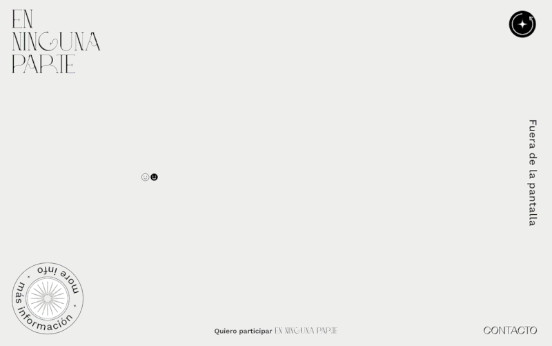
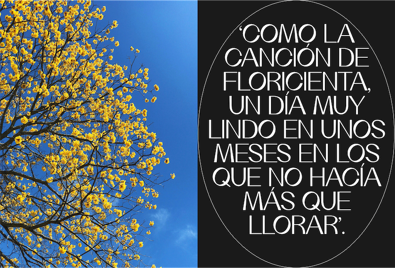
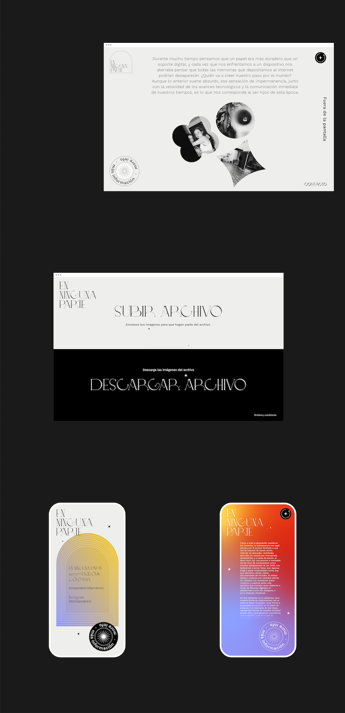
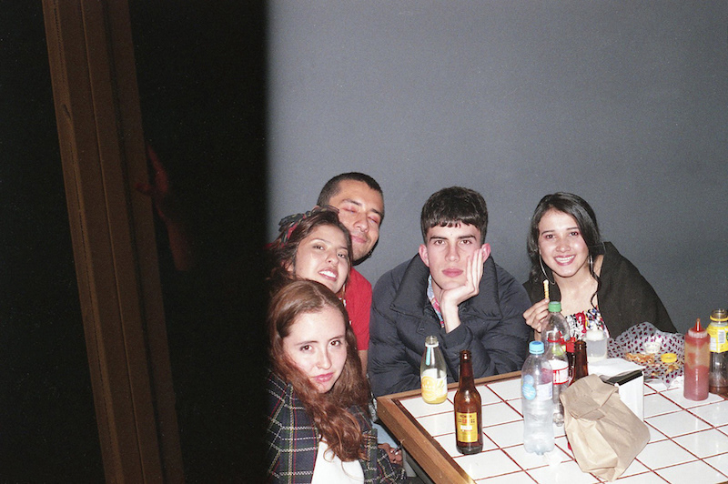

The Nowhere Archive is a space where loose fragments of the collective memory of our generation are exhibited. The images that appear randomly, make up a collection of individual memories that remain in the immediacy of digital platforms.
An unfinished, mutant and infinite project, a place on the internet that belongs to all of us.
enningunaparte.online / Instagram
Role: Web development, Interaction design, UI Design
Technologies: HTML, CSS, JavaScript



